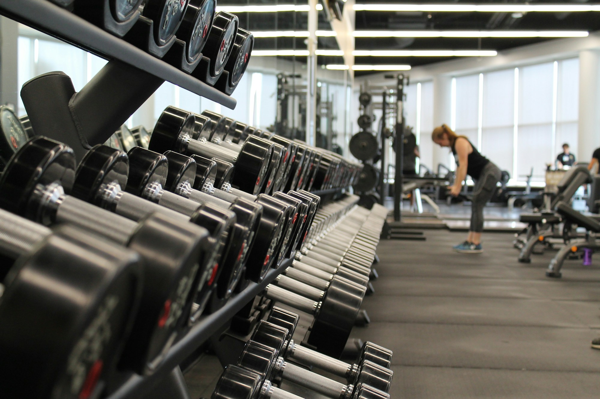

STRONGER LOOKS DIFFERENT ON EVERYONE
Real People.
Real Results.
See the incredible transformations achieved by our members. A little courage. A lot of showing up. A whole new chapter.
Illustrative member stories — not verified fitness outcomes.
Find a story like yoursEvery starting point belongs here.
Progress, not perfection. Always.


A new kind of confidence.
SMALL STEPS.
Extraordinary stories.
Example figures, not audited data
transformations
average weight lost
example retention claim*
THE STORY BEHIND THE STRENGTH
MEMBER SPOTLIGHT / FICTIONAL SARAH’S NEXT CHAPTER
SARAH’S NEXT CHAPTER“I found a stronger
version of myself.”
Sarah M. 34 · Portland, OR · Fictional member
“I never thought I’d wear a swimsuit again. Now I can’t wait for summer!”
Fictional quote and example metrics. Stock model is not Sarah.
DIFFERENT JOURNEYS. SAME COMMUNITY.
Find your inspiration.
Not a finish line. A new beginning.
Explore fictional stories from every starting point.
No matching stories — yet.
Try a different goal, or reset your filters to meet everyone.
All gallery profiles and metrics are fictional. Photo toggles demonstrate the interface, not evidence of physical change. Hover, toggle or swipe a comparison.
BEYOND THE BEFORE & AFTER
There’s a story
behind every shift.
Three short, locally played storyboards.
Illustrative stills and captions, not recorded interviews.
YOUR GOALS. YOUR WAY.
More than one
way to get there.
A good program meets you where you are. Explore the kind of support that fits your next chapter.
PROGRESS IS BIGGER THAN A PHOTO
The little things add up.
Illustrative aggregate dashboard.
Example cohorts differ; these are not audited claims.
average weight lost
average body fat reduction
reached their personal goal
maintained their progress
community pounds lost
TAKE A CLOSER LOOK
A different kind of before & after.
These stock-image comparisons are interface demonstrations, not authentic member photographs.
Sarah M.
Finding confidence, one day at a time.
STRONGER, TOGETHER
Your people. Your corner.


Curated stock-photo moodboard, not a live Instagram feed or member-generated posts.
YOUR STORY COULD BE SOMEONE’S FIRST STEP
Proud of your
transformation?
Share what changed, what challenged you, and what you learned along the way.
LOCAL PREVIEW ONLY · NOTHING IS UPLOADEDA FEW THINGS YOU MIGHT BE WONDERING
Every journey
starts with a question.
How long until I see results?
Progress is individual. Energy, consistency and strength can change before appearance does. A qualified professional can help set realistic goals; these example timelines are not promises.
Do I need previous fitness experience?
No. The concept includes beginner-friendly sessions and adaptable movements. Discuss injuries, health conditions and exercise readiness with a qualified clinician.
What programs do you offer?
The fictional program menu includes personal training, group fitness, strength and conditioning, weight management and nutrition coaching.
Is nutrition coaching included?
In this demo, nutrition coaching is an optional program. An actual provider would confirm availability, scope, credentials and fees before enrollment.
Can I speak with a member?
The members here are fictional. A real program would arrange conversations only with the member’s explicit consent. The consultation form below is a local demonstration.
THE NEXT STORY COULD BE YOURS
Ready to write your
own success story?
Your transformation starts today. Explore a free consultation
and find a little clarity about your next step.
Demo offer · no booking, payment or contact details sent